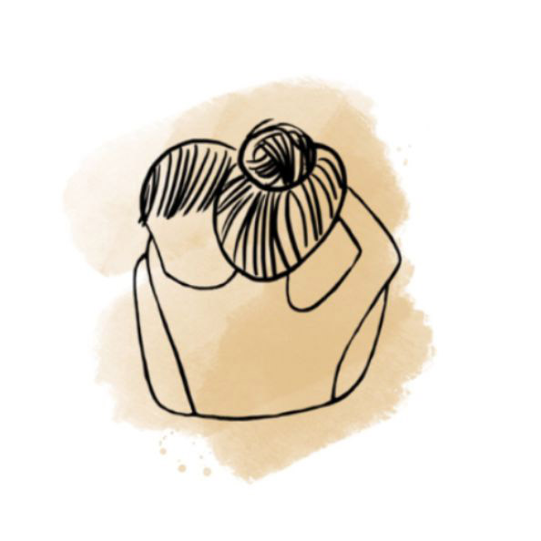

1. Partnerská intimita, vztah k vlastnímu tělu
Často zkrátka nerozumíme sami sobě. Ani jeden druhému. Přesto všichni toužíme po tom samém – milovat a být milováni. Užívat si partnerský vztah i svou sexualitu. Plně přijmout druhého však můžeme až tehdy, když plně přijmeme sami sebe. Láska k vlastnímu tělu bývá často to nejtěžší. Znamená to přijmout své tělo přesně takové, jaké je. Pracuji s páry individuálně i společně.
Objednat konzultaci
2. Intimita v těhotenství a při porodu
Máte ráda své tělo takové, jaké je. Zvykla jste si na něj a pečujete o něj. Náhle, vlivem těhotenství, se začíná nekontrolovaně měnit. Mění se natolik, že se v něm mnohdy sama nepoznáváte. Reaguje jinak na dotek, pohyb i intimitu. Udržet si partnerskou intimitu během těhotenství bývá velkou výzvou. Jsem tu, abych vám pomohla. V bezpečném prostředí vás provedu světem intimity v tomto výjimečném období.
Objednat konzultaci
3. Intimita v mateřství a rodinná pouta
Vytoužené miminko je na světě. Jste šťastnými rodiči, ale váš každodenní svět se obrátil vzhůru nohama. Partnerská intimita náhle ustoupila do pozadí. Jak ji znovu obnovit? Jak zvládnout tuto zcela novou situaci společně? Sama jsem si tím prošla a vím, co skutečně pomáhá. Stačí jen společná vůle udělat krok ke změně.
Objednat konzultaci
4. Intimita u dětí a dospívajících
Během prvních 18 měsíců si dítě začíná utvářet intimní vztah ke svému tělu. Děsíte se prvních otázek o těle a sexualitě? Jste bezradní, když vaše dítě zkoumá své intimní partie? Máte obrovskou moc pozitivně ovlivnit vztah vašeho dítěte k jeho tělu i to, jakou první intimní zkušenost bude mít vaše dcera. Nejprve společně zpracujeme vaše obavy a připravíme vás na období zvídavých otázek s klidem a porozuměním.
Objednat konzultaci
5. Intimita ve zralém věku
Žijete v dlouhodobém vztahu a myslíte si, že už o sobě nemůžete nic nového zjistit? Ráda vás vyvedu z omylu. Budete překvapeni, kolik potěšení můžete znovu prožívat a jak se do sebe můžete zamilovat i po 20 letech společného života. Získáte bohatou inspiraci pro svůj intimní život. A pokud jste po rozvodu či rozchodu sami a nevíte, jak navazovat nová spojení, prozkoumáme vaše vnitřní silné stránky. Zjistíte, jak plný a bohatý může být život i ve zralém věku.
Objednat konzultaci
6. Intimita ve smrti a odcházení
Vše má svůj konec. I život. Záleží jen na nás, zda dokážeme doprovázet své nejbližší na jejich poslední cestě s hlubokou důstojností, klidem a lidskou úctou.
Objednat konzultaci